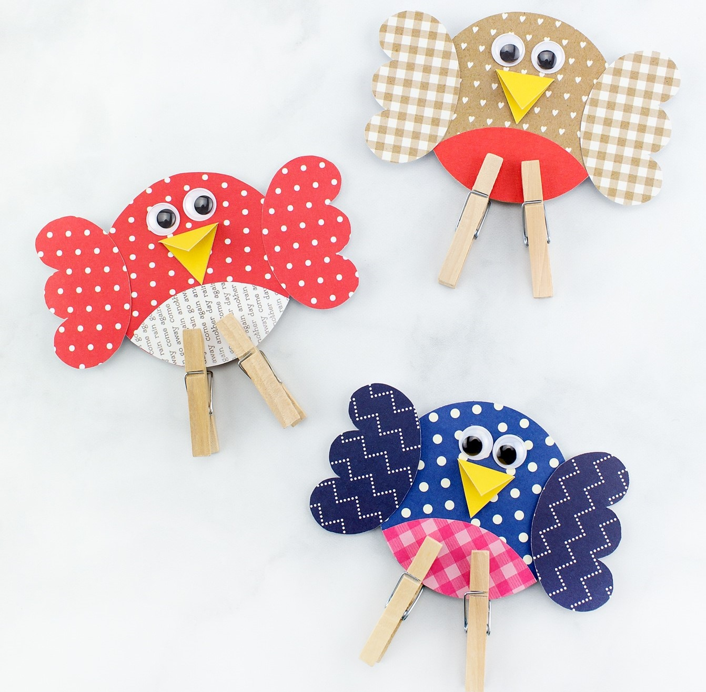
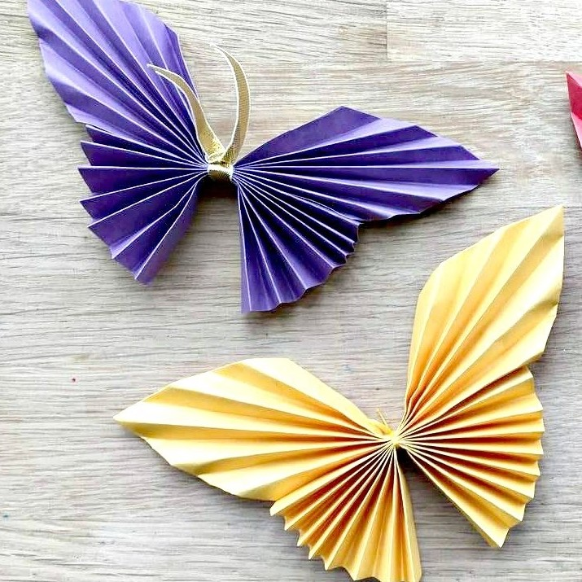
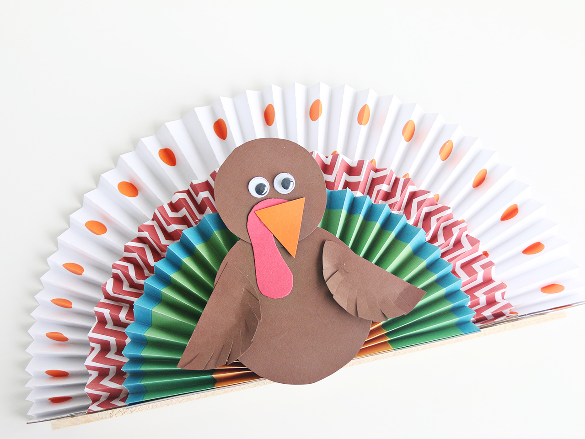
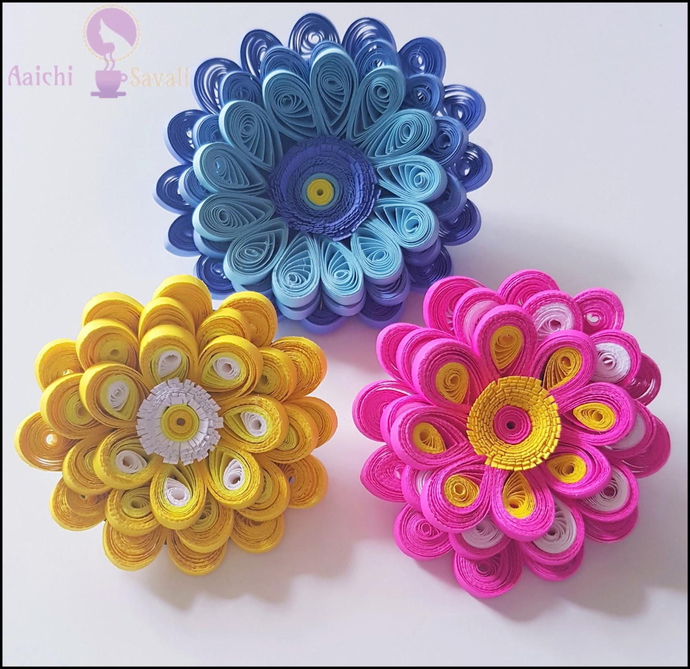
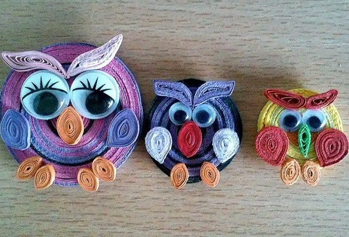
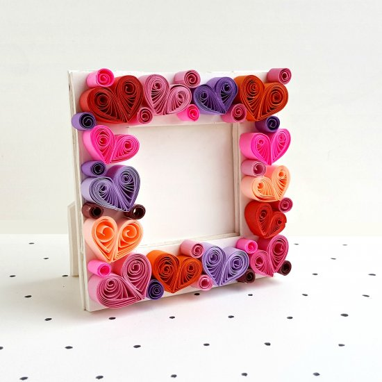
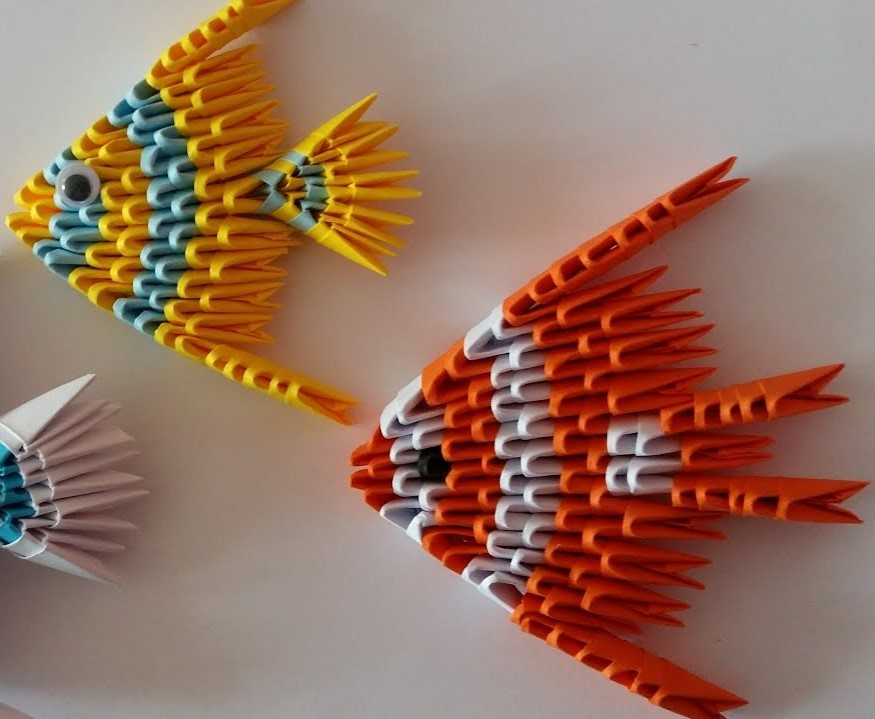
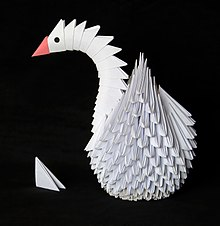
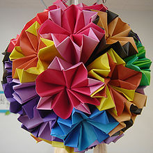

Paper craft is the collection of art forms employing paper or card as the primary artistic medium for the creation of one, two or three-dimensional objects. Paper sculpture being the most difficult to master because it involves drawing, design and complex interlocking pattern making skills.
Colorful birds can be made out of papers by using different colors.Material need for the formation of colorful cute bird:Glue,papers,popup eyes,papers clips. Papers needed to be cut in round shape.
img1 : birds
For butterfly some materials are needed like square paper, strings for hanging,scissors and so on.Paper crafts for young and old!!!paper really is a universal craft material that most people have access to crafts
img2 : butterfly
For making peacock different color of paper is needed
img3 : peacock
Quilling or paper filigree is an art form that involves the use of strips of paper that are rolled, shaped, and glued together to create decorative designs.
Flower can be made by using various kind of strips and along with that it needed qulling tools like qulling needle,plate,glue and strips.
img4 : flower
For owl quilling paper work some materials like pop up eyes, quilling strips, quilling tool is needed.Paper are rolled within one after other, shaped, and glued together to create owl.
img5 : owl
For making Photoframe different color of paper is needed.For the base hardboard is used and above that it is decorated with quilling flower
img6 : photoframe
Modular origami or unit origami is a paperfolding technique which uses two or more sheets of paper to create a larger and more complex structure than would be possible using single-piece origami techniques.
Origami is an art of folding paper sheets and for making fish various colors are used and are folded into three-dimension.
img7 : fish
Each individual sheet of paper is folded into a module, or unit, and then modules are assembled into an integrated flat shape or three-dimensional structure by inserting flaps into pockets created by the folding process. These insertions create tension or friction that holds the model together.
img8 : swan
The six modules required for this design were developed from the traditional Japanese paperfold commonly known as the menko. Each module forms one face of the finished cube.
img9 : cubical ball